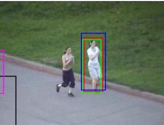
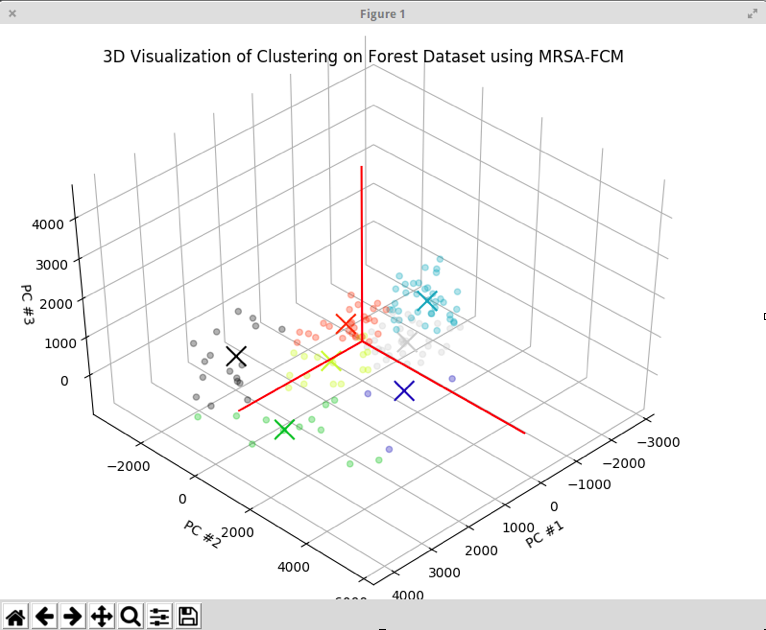
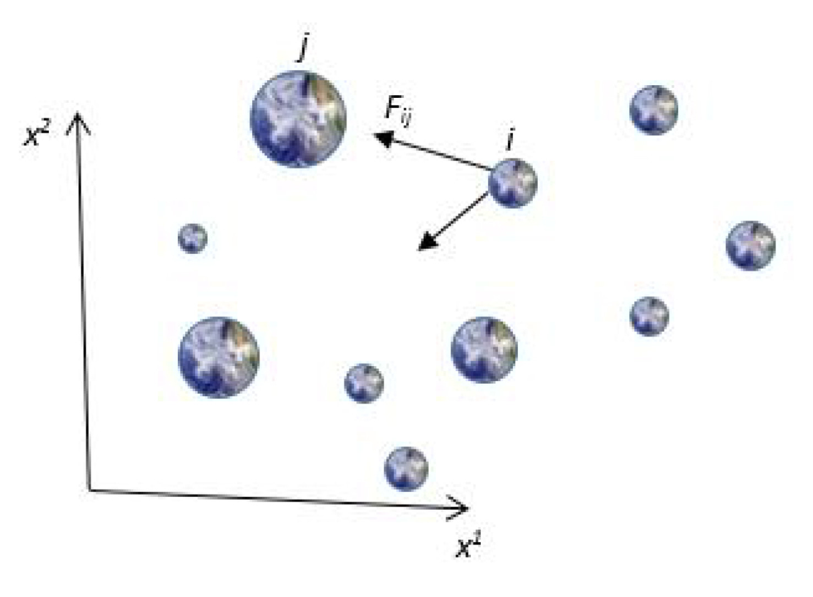

|
Dhruv Mullick
I am a Software Development Engineer - 2 at Amazon.com, where I work on building systems to allow Amazon's customers to manage their communication preferences.
Before working at Amazon, I completed my undergraduation in Computer Engineering from NSIT, University of Delhi, where I got the opportunity to explore my academic interests in Computer Vision and Machine Learning. Here, I was advised by Prof. Swati Aggarwal for my Bachelor's Thesis Project.
I have also acted as a research associate to Prof. A V Subramanyam at IIIT, Delhi where I performed research on visual object tracking.
Email /
CV /
Google Scholar /
LinkedIn
|
|
|
Research
I'm interested in computer vision, reinforcement learning and machine learning.
|
|

|
Online SVM and Backward Model Validation Based Visual Tracking
Dhruv Mullick, A V Subramanyam, Sabu Emmanuel
24th IEEE International Conference of Image Processing (IEEE ICIP) - 2017, Beijing, China
poster /
demo video
Worked on scale adaptation of an object’s appearance while in motion by using an Online SVM for maintaining an adaptive object appearance model.
|
|

|
Ant Colony Based Fuzzy C-Means Clustering for Very Large Data
Dhruv Mullick, Ayush Garg, Arpit Bajaj, Ayush Garg, Swati Aggarwal
10th Conference of the European Society for Fuzzy Logic and Technology (EUSFLAT) - 2017, Poland
bachelor's thesis /
ppt
Performed research on Clustering of Big Data, with the goal to cluster large data without using distributed computing resources.
|
|

|
Gravitational Search Algorithm in Recommendation Systems
Vedant Choudhary, Dhruv Mullick, Sushama Nagpal
8th International Conference on Swarm Intelligence (ICSI) - 2017, Japan
Explored the application of Gravitational Search Algorithm in Recommendation Systems for determining feature weights.
|
Website Template Credits: Jon Barron.
|
{kind=link}